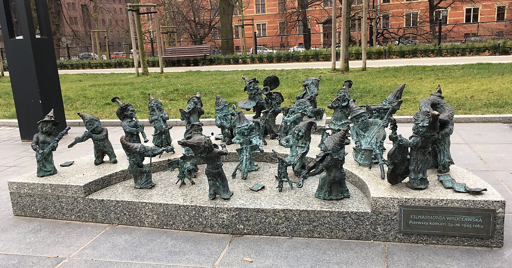

Wrocławskie krasnale – symbol miasta
Wrocławskie krasnale to jedna z najbardziej rozpoznawalnych atrakcji Dolnego Śląska. Te małe, urocze figurki pojawiły się w mieście w latach 2000., ale ich historia sięga znacznie wcześniej – do ruchu Pomarańczowej Alternatywy z lat 80.
Dziś w mieście można znaleźć ponad 1000 krasnali, rozsianych po ulicach, zaułkach i placach. Każdy z nich ma swoje imię, charakter i unikalną historię.
Podczas spaceru po Wrocławiu warto śledzić mapę szlaku krasnali, która pomaga odkrywać mniej znane zakątki miasta.
Najpopularniejsze krasnale
Porównanie kilku znanych krasnali
| Nazwa krasnala | Lokalizacja | Cechy charakterystyczne |
|---|---|---|
| Student | Plac Grunwaldzki | Książki w dłoniach, czapka absolwenta |
| Syzyfki | ul. Świdnicka | Dwa krasnale toczące kulę – symbol wytrwałości |
| Pracz Odrzański | Bulwar Dunikowskiego | Pracujący nad brzegiem Odry |
Podziel się swoją opinią!

Testowe zakotwniczenie
Sekcja demonstracji JavaScript
Licznik kliknięć: 0
Suma wszystkich podanych liczb: 0
Wylosowana liczba:
Ile jest województw w Polsce?
Test pętli
While...
Do...While...
For...
Manipulacja elementami DOM
- Początkowy element listy
Kolekcje DOM
Sprawdź ile elementów mają kolekcje na tej stronie: